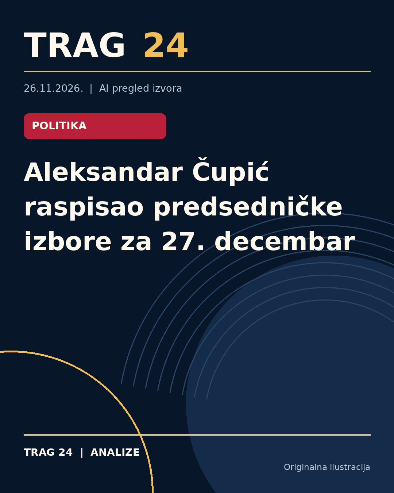

Aleksandar Čupić raspisao predsedničke izbore za 27. decembar

ŠTA SE DOGODILO
Aleksandar Čupić, predsednik Skupštine Srbije, raspisao je predsedničke izbore za nedelju, 27. decembar. Odluka je objavljena nakon što je novi parlament Srbije upravo konstituisan. Ovo se dešava u skladu sa Zakonom o predsedniku Republike koji propisuje da se izbori moraju održati najkasnije tri meseca nakon prevremenog prestanka mandata, jer je Aleksandar Vučić podneo ostavku na funkciju predsednika kako bi se kandidovao na skorašnjim parlamentarnim izborima.
HRONOLOGIJA
Mandat dosadašnjeg predsednika Aleksandra Vučića prekinut je 27. septembra, mesec dana pre okončanja. Raspisivanje izbora od strane Čupića usledilo je u narednim danima nakon konstituisanja nove Skupštine. Izbori su zakazani u vremenskom okviru propisanom zakonom, koji nalaže da od raspisivanja do samog glasanja mora proći najmanje 30, a najviše 60 dana.
ŠTA NAVODE IZVORI
Čupić je pozvao građane da budu odgovorni i izađu na izbore kako bi se izabrao predsednik sa snažnim legitimitetom, koji će predstavljati izraz državnog jedinstva. Demokratska stranka (DS) je saopštila da će podržati kandidata studentskog pokreta, što odražava njihovu želju za nastavkom promena u društvu fokusiranih na borbu protiv kriminala i korupcije, kao i jačanje pravne države. Studentski pokret je najavio objavu svog kandidata uskoro po raspisivanju izbora.
ŠTA JE POTVRĐENO
Izbori će biti održani 27. decembra, a odluka o raspisivanju stupa na snagu danom objave u Službenom glasniku. Raspisivanje je u skladu sa zakonskim odredbama nakon prevremenog prestanka mandata predsednika. Podrška DS kandidatu studentskog pokreta potvrđena je zvanično.
ŠTA NIJE POTVRĐENO
Imena kandidata koji će se zvanično kandidovati na predstojećim izborima, osim podrške DS kandidatu studentskog pokreta, za sada nisu saopštena. Takođe, detalji kampanje i predizbornih programa još nisu dostupni.
ŠTA OSTАJE OTVORENO: Ostaje da se vidi koliko će biti izlaznost na predsedničkim izborima i koji će kandidati učestvovati. Takođe je otvoreno pitanje kakav uticaj će imati izbori na dalju političku stabilnost i institucionalno jačanje u periodu političke tranzicije u Srbiji.
Izvori
- https://www.euronews.rs/srbija/politika/253821/aleksandar-cupic-na-sastanku-lidera-regiona-u-ohridu/vest
- https://autonomija.info/aleksandar-cupic-raspisao-izbore-za-predsednika-srbije-za-27-decembar/
- https://n1info.rs/vesti/ds-podrzacemo-kandidata-studentskog-pokreta-za-predsednika-srbije/
Ova analiza je pripremljena uz pomoć veštačke inteligencije na osnovu javno dostupnih izvora. Navodi izvora nisu nužno nezavisno potvrđeni.